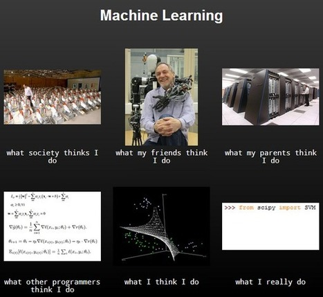

機器學習小工藝
寫在前面
接觸過資料科學的讀者看到這張圖應該都有相同感觸：如果你曾經從stack overflow 剪下貼上from sklearn (不是scipy) import svm，同時心想「我到底import了三小??」，那希望這一系列文章可以減輕你的疑惑。
這一系列文章想處理的問題，就是幫助讀者打開ML package的黑箱。在這一系列文章中我們不會著重於介紹各種state of the art方法。但我們希望透過動手做搭起一座橋，讀者可以從圖中的what I really do 逐漸往 what other programmers think I do 邁進，並開始思考如何設計出自己的state of the art。我們也許無法從scipy import SVM，但希望這一系列文章能幫助你，從numpy/scipy/cvxopt蓋出自己的SVM。
這一系列文章會從最佳化(optimization)的角度切入來探討一些ML演算法。大部分ML algorithms 都對應著一個最佳化問題 。然而理解最佳化所需要的數學基礎，常常是學習ML的障礙。所以，這系列文章希望透過python實做來幫助讀者跨過這個障礙。這一系列文章希望體現一些核心宗旨：
- 動手作。實做/實驗/觀察 先於理論。
- 硬漢自刻。不import sklearn也能做的ML。
- 鄉民用語。ptt魂。
Posts
我們預計探討一些題目(暫定)，例如：
{% include pull_posts.html %}動手作吧！